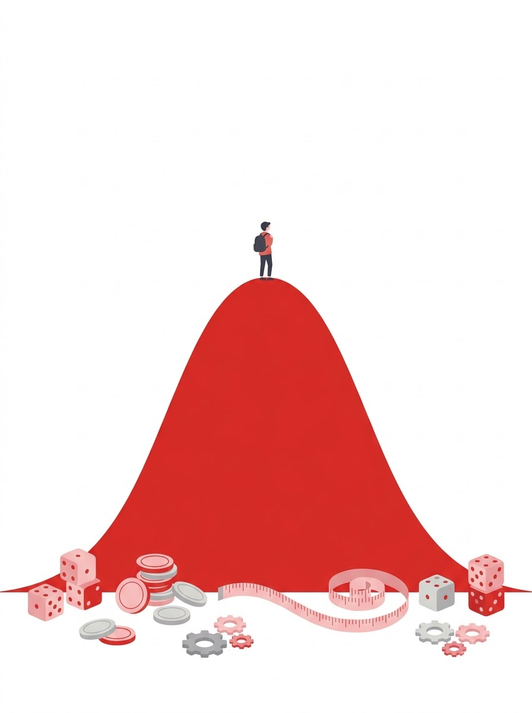
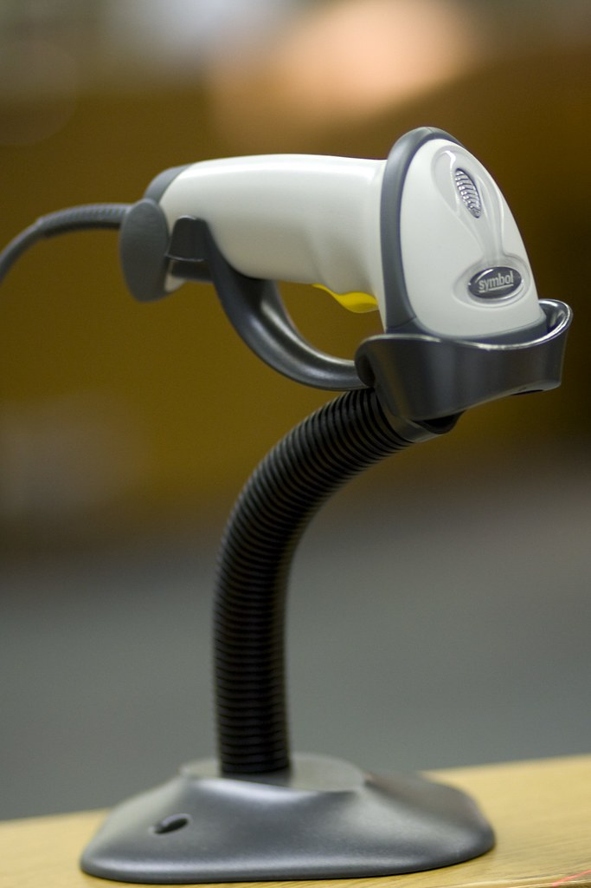
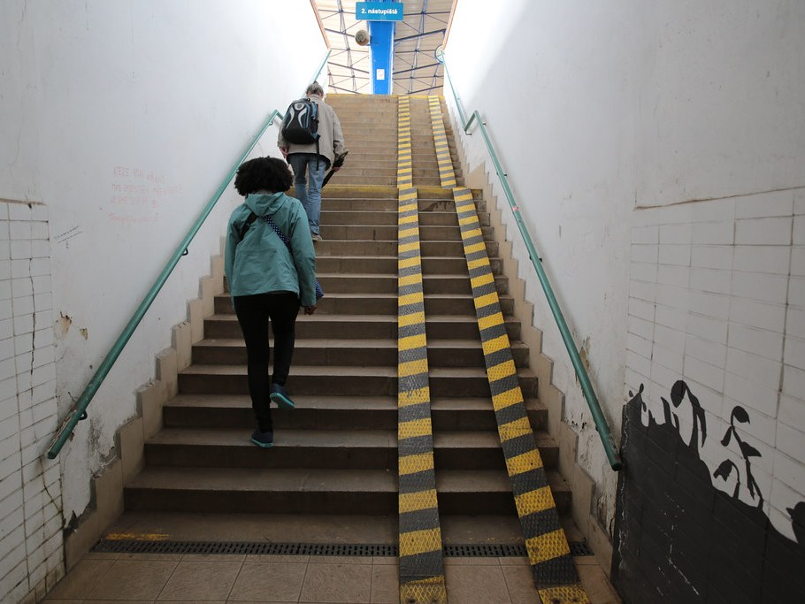
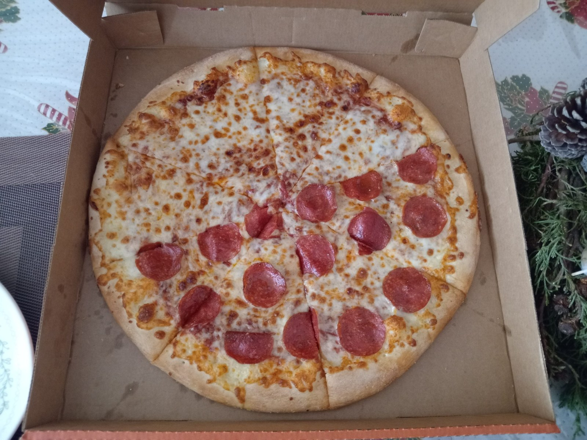
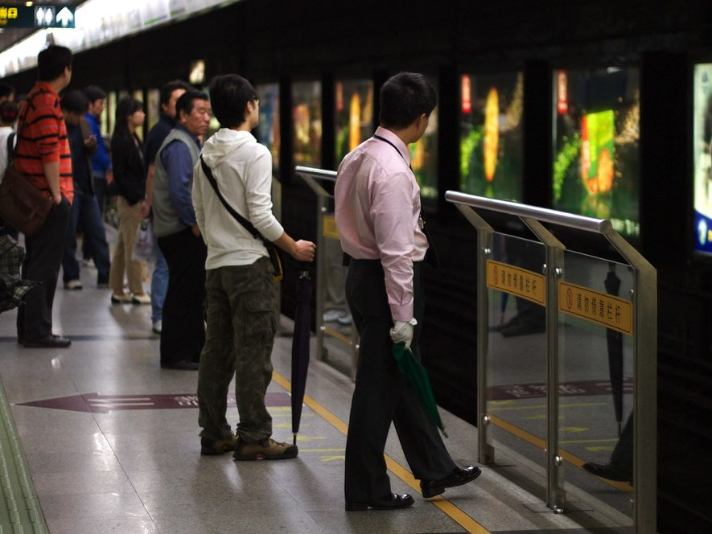
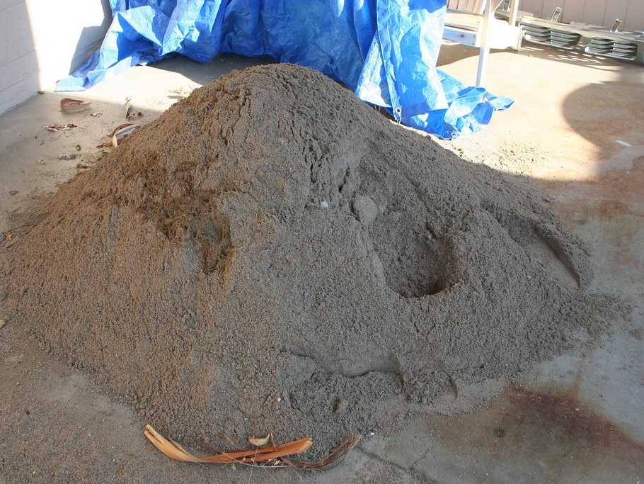
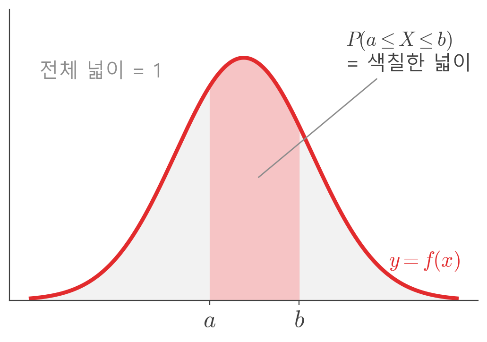
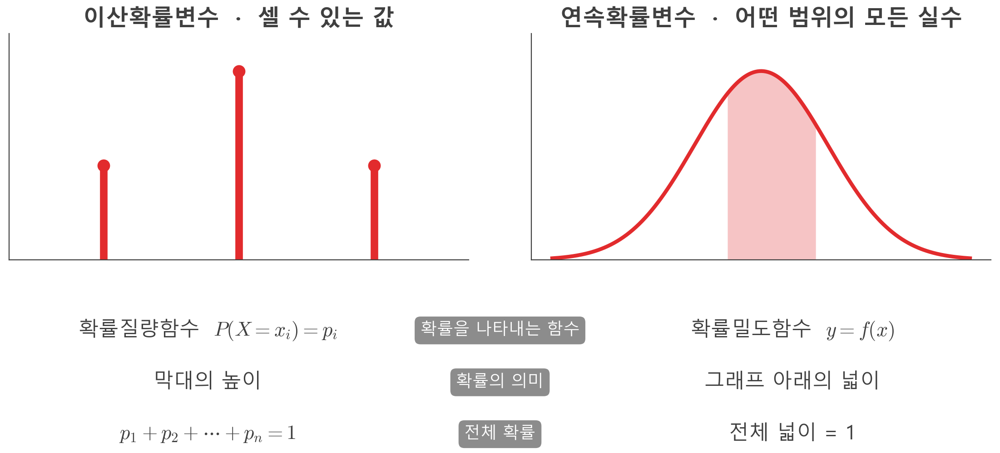
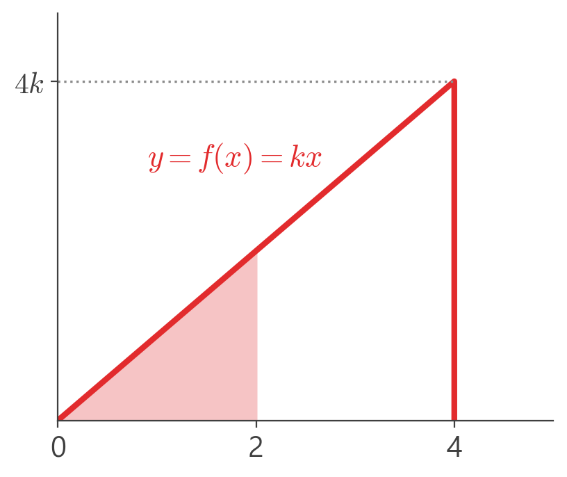
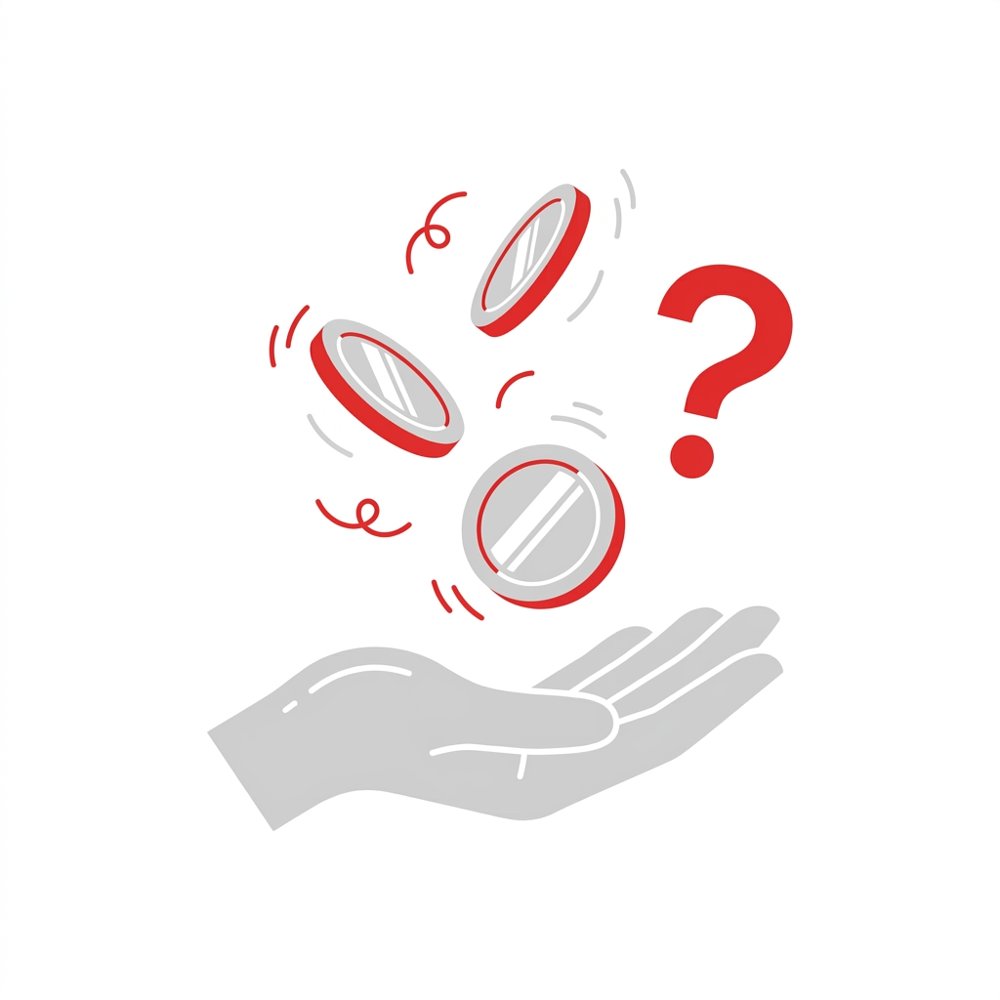

01
확률과 통계
강사 : ○○○

CONTENTS
목표 1
확률변수와 확률분포의 뜻 이해
목표 2
이산·연속확률변수의 구분과 확률분포의 성질 활용
[비유] 바코드 스캐너

사진: Michael Casey / CC BY 2.0
확률변수(random variable): 각 근원사건 → 실수 하나
[비유] 계단과 미끄럼틀

사진: waitscm / CC BY 2.0
사진: jonolist / CC BY-SA 2.0
확률변수의 두 종류: 셀 수 있는 값 vs 범위 안의 모든 실수
[비유] 피자 한 판 나누기

사진: maryseas4 / CC0
이산확률변수(discrete random variable)
· 이산확률변수: 취하는 값이 유한개이거나 자연수처럼 셀 수 있는 확률변수
· 확률질량함수(probability mass function): P(X = x₁) = p₁, …, P(X = xₙ) = pₙ
이산확률변수의 확률분포의 성질
① 0 ≤ p₁, p₂, …, pₙ ≤ 1
② p₁ + p₂ + … + pₙ = 1
사진: Robert Scoble / CC BY 2.0
예: 불량품 수 X의 확률분포
[비유] 지하철 기다리기

사진: mooney47 / CC BY 2.0
연속확률변수(continuous random variable)
· 연속확률변수: 취하는 값이 어떤 범위에 속하는 모든 실수인 확률변수
· 확률 P(a ≤ X ≤ b) = 그래프 아래 넓이
[비유] 모래 더미

사진: cogdogblog / CC0
확률밀도함수(probability density function)
확률밀도함수의 성질
① f(x) ≥ 0
② 그래프 아래 전체 넓이 = 1
③ P(a ≤ X ≤ b) = a~b 구간의 넓이

이산확률변수 vs 연속확률변수

확인 문제
100원짜리 동전 3개를 동시에 던질 때, 앞면이 나오는 개수 X가 취하는 모든 값
X의 범위 0 ≤ X ≤ 4, 확률밀도함수 f(x) = kx
상수 k의 값과 P(0 ≤ X ≤ 2)


마무리
이산확률변수의 기댓값과 표준편차
사진 (Openverse 검색, CC 라이선스) · AI 생성 이미지·영상